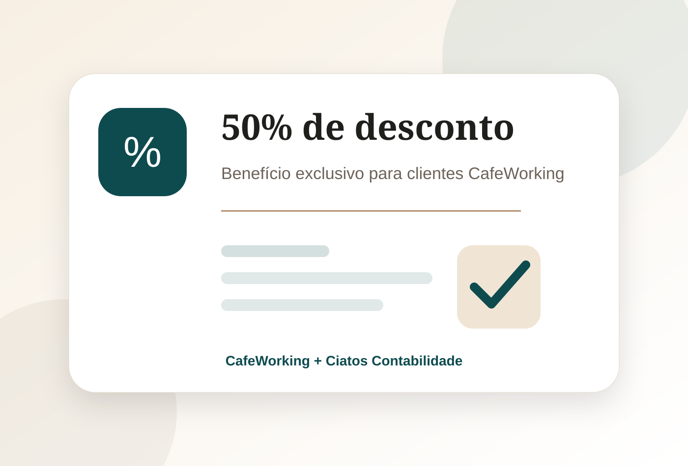

MEI
Formalização simplificada
Ideal para profissionais autônomos que desejam iniciar com baixo custo, regularidade e CNPJ ativo.
- Baixo custo operacional
- Processo rápido
- Ideal para início
Clientes do CafeWorking têm 50% de desconto na constituição de empresa e podem contar com suporte contábil, endereço fiscal e orientação para começar com mais segurança.

A abertura de empresa é realizada pela Ciatos Contabilidade, empresa do Grupo Ciatos especializada em serviços contábeis para empresários, prestadores de serviço e pequenas empresas.
Quem já é cliente do CafeWorking recebe 50% de desconto no valor da constituição da empresa, podendo ainda contratar serviços contábeis com condições diferenciadas.

A Ciatos Contabilidade orienta o cliente nos principais passos para abertura do CNPJ, escolha da atividade, documentação e estrutura inicial.
Ideal para profissionais autônomos que desejam iniciar com baixo custo, regularidade e CNPJ ativo.
Para prestadores de serviço, consultores, profissionais liberais e empresas em crescimento.
Estrutura societária para negócios que precisam de contrato social e organização empresarial.
Comece sua empresa com endereço profissional, recepção e suporte empresarial integrado.
O objetivo é tirar o cliente da informalidade ou do improviso e entregar uma estrutura empresarial mais organizada, com endereço, contabilidade e suporte.
Entendemos a atividade, cidade, sócios e objetivo da empresa.
Definimos natureza jurídica, CNAE, regime tributário e endereço.
A Ciatos conduz os procedimentos de abertura e regularização.
O cliente pode contratar contabilidade, endereço fiscal e estrutura do CafeWorking.
O CafeWorking faz parte do Grupo Ciatos. Por isso, o cliente pode unir ambiente profissional, endereço fiscal e suporte contábil em uma solução integrada para começar melhor.


Ao utilizar o CafeWorking como base empresarial, o cliente passa a contar com uma estrutura real, recepção, cafeteria, salas, áreas comuns e possibilidade de receber clientes em um ambiente premium.
A constituição da empresa é realizada pela Ciatos Contabilidade, empresa do Grupo Ciatos.
Sim. Clientes do CafeWorking têm 50% de desconto no valor da constituição da empresa.
Sim, mediante contratação do plano de endereço fiscal e análise de viabilidade da atividade.
Sim. O cliente pode contratar os serviços da Ciatos Contabilidade e receber condições especiais por já ser cliente CafeWorking.
Sim. A abertura de empresa pode ser orientada para clientes em diferentes cidades do Brasil, conforme viabilidade e exigências locais.
A equipe analisa a atividade, faturamento previsto e perfil do negócio para orientar o enquadramento mais adequado.